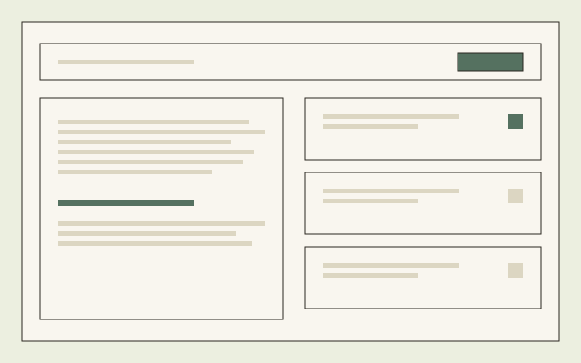

Case
KnowledgeScan
An expert service, turned into a product.
Project
Instem
Product Designer
9 months
Product Design
Preview

Overview
The brief
Target safety assessments were a bespoke, expert-led service that couldn’t scale. KnowledgeScan made that expertise repeatable.
I sat with the experts, decoded their judgement and rebuilt it as workflows and structured reports, without flattening the science.
The challenge
What was in the way
Target safety assessment had been running as a service: a small number of specialists applying years of judgement to each request, by hand.
- That judgement lived in people’s heads, not in a system, so the service could not scale past the number of specialists available to run it.
- Every request was handled slightly differently, which made the work expert but not repeatable, and hard to hand off or review.
- Turning it into a product risked doing the thing expert services fear most: flattening real judgement into a form that looks structured but has lost what made it useful.
The approach
How we got there
-
Decode the judgement, don’t template it
Time with the specialists who ran the service, tracing the actual reasoning behind a recommendation rather than the process they described from memory.
-
Structure around the decision, not the form
The workflow follows how an expert actually reasons through a target: evidence weighed, a judgement formed, a report produced. The tool supports that shape rather than imposing its own.
-
Keep room for judgement the system can’t see
Where the workflow could not fully capture an expert’s reasoning, it left space for it rather than forcing a false level of structure.
-
Validate against the experts’ own standard
Output reviewed by the same specialists whose judgement it was built from, since they were the only people qualified to say whether it still held up.
The outcome
What shipped
A structured, repeatable version of a service that used to depend on a small number of specialists being available.
KnowledgeScan is live and in use. Instem’s client confidentiality means I can write about how the expertise was decoded and structured, but not show the interface itself or publish outcome figures. This case study is the reasoning behind that translation, not a tour of the product.
Next
Get in touch